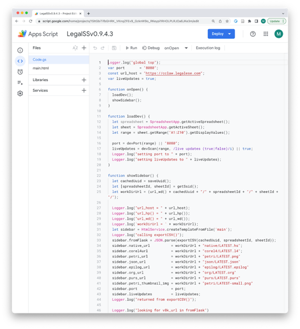

Installation and setup instructions of the Google Sheets App¶
The most prominent element of the L4 IDE (Interactive Development Environment) is the sidebar that appears in an L4 spreadsheet.
That sidebar is generated by the Google Sheets App, which provides the interface layer between the Spreadsheet IDE for L4, and the L4 backend.
Instructions for activating the IDE sidebar (a one-time process) can be found at https://docs.google.com/spreadsheets/d/1leBCZhgDsn-Abg2H_OINGGv-8Gpf9mzuX1RR56v0Sss/edit#gid=1453008311&range=22:29 1
The instructions are repeated here for easy reference, though you will need to follow the instructions on the spreadsheet.
Inside the spreadsheet, in this case “LegalSSv0.9.4.3” 1. Make a copy of the spreadsheet by clicking on ‘File’ at the toolbar, then choose the 4th option ‘Make A Copy’.
You should get a pop-up like in this image:
Choose where you want to copy the spreadsheet.
Rename the result: this will be your copy of the spreadsheet tutorial.
Activating the L4 Sheets IDE¶
A one-time procedure is needed to activate the L4 interface within your copy of LegalSS.
Click on Extensions/Apps Script.
A new tab will open on your browser and you will be asked to select a project to open. Choose the first project “LegalSS…” with the version number (e.g. “LegalSSv0.9.4.3”). Do not click on “Untitled Project”.
When the Apps Script page loads, go back to your copy of LegalSS in your browser and select the tab “Quickstart”, which is the first tab of the LegalSS spreadsheet.
Back in the App Script page, click “Run” to execute the function. You will have to grant permission to the App Script to make changes to Google Sheets.
An Execution Log should appear below the App Script. Wait until you read “Execution Completed”, highlighted in yellow, before you move on to the next step.
Return to the LegalSS Spreadsheet. You should see a sidebar appear on the right side of the page.
If you do not see a sidebar, contact the L4 developers for help.
Google Sheets App Source Code¶
The source code for the Google Sheets App, with accompanying documentation, can be found at https://github.com/smucclaw/gsheet/
Within that codebase, the entry point is Code.gs which runs as a Google Apps Script app within the L4 spreadsheet.
“Step” annotations refer to the diagram below.
The following snapshot shows the Google Apps Script interface in which Code.gs and main.html are presented. It is accessible from the Extensions / App Script menu in the L4 Spreadsheet.
Footnotes
- 1
It is envisaged that future versions of this tool will streamline the setup process.